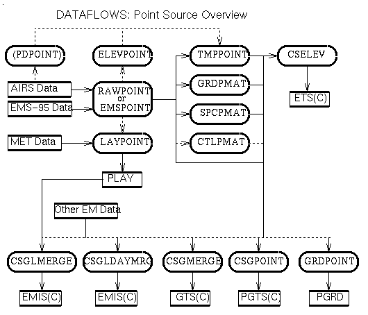
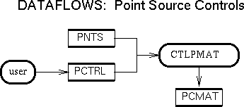
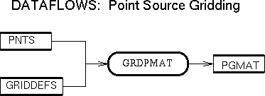
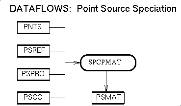
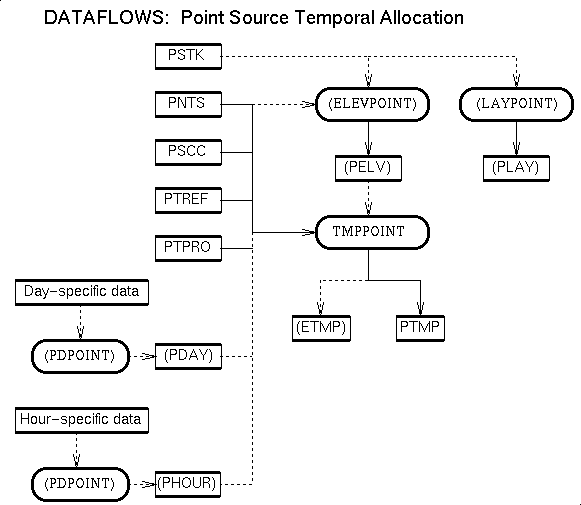

Day-specific and hour-specific data
For the EPS2.0 raw data input format, emissions are often prepared as an annual
average. If, however, data are also available as daily totals or hourly totals,
SMOKE will accept these inputs as well, also in the EPS2.0 format. For the
EMS-95 raw data input format, emissions are usually prepared as either average
daily totals or hour-specific totals, both of which SMOKE can handle
effectively.
Point sources are 3D
The plumes arising from point source emissions extend high into the vertical
structure of the air quality modeling grid definition. For these sorts of
plumes, the plume rise needs to be modeled, and the emissions from
these sources provided to the air quality model in three dimensions. SMOKE can
model plume rise in two ways, as described in the
concepts section below.
Remaining Steps
The remaining point source processing steps are speciation, temporal
allocation, projection, control, and gridding. These are implemented using the
standard emissions cross-reference and profile approach in which each county,
SCC code, plant ID, and stack ID is indirectly assigned a profile number by
using a cross-reference file. A given profile number is used to find the
appropriate temporal profile, speciation profile, etc., that transform the raw
data using factors from the profiles.
Layer fractions method
SMOKE has two separate methods for calculating plume rise, one of which must be
selected for use in processing, and this decision is based on the air quality
model for which the emissions are being prepared. The air quality models MAQSIP and SAQM require the layer
fractions method, because these models typically have fine vertical
resolutions. For this method, meteorological data are used to calculate the
plume rise for all point source emissions using essentially the same
method as in the RADM air quality model. Then, the plume is evenly distributed
into the vertical layers that the plume intersects. Only these fractions are
stored (not the emissions in each layer), until the SMOKE merge step, and
consequently, the plume rise calculations do not need to be repeated for each
control strategy or grid (unlike the situation in which the plume rise
calculations are done inside the air quality model, such as in the UAM-IV and
UAM-V). The plume rise does need to be calculated, using the LAYPOINT processor, for all days of each meteorological
scenario.
For more information on how the layer fraction method differs from the EPS2.0 approach (which uses the cutoff method described next), see the Plume Rise part of the EPS differences section.
Cutoff method
Another approach to modeling plume rise is first to quickly estimate the
plume rise using a Briggs-algorithm plume rise calculation similar to that
found in EPS2.0, and then compare this plume rise to a user-defined cutoff value.
Sources below this cutoff are treated as single-layer point sources, and
sources above this cutoff are considered elevated point sources. In SMOKE, the
ELEVPOINT program makes this distinction, and
the TMPPOINT program outputs separate hourly
emissions for single-layer and elevated point sources. Eventually, two air
quality input files will result from this approach, a 1st-layer file and an
elevated point sources file. These files are used by the UAM-IV and UAM-V.
Some changes to the Briggs algorithm have been made in SMOKE, and these are
described in the Plume Rise section of the
EPS differences page.
Multiple year-to-year projections
SMOKE can combine raw data from different inventory years into a
single inventory. The inventory year is stored as one of the records in the
SMOKE point source inventory file PNTS. The data
from these different years can then be projected to the same year using the CTLPMAT projection and controls program. Although
this program uses the EPS2.0-formatted control file, the format of the
projection packet in this file has been modified so that the projection factors
are listed with the "from year" and the "to year".
The following data flow diagram provides a conceptual overview of point-source processing stages. (Details on the various items on the figure are given in the next section.)

(This diagram is available in the following formats: in Postscript, in GIF, in X bitmap, and in JPEG.
In addition, diagrams giving an overview of the main line of SMOKE processing and how point source processing fits into that whole are available for UAM air quality modeling in Postscript, in GIF, in X bitmap, and in JPEG; and also for EDSS air quality modeling in Postscript, in GIF, in X bitmap, and in JPEG. Note that additional options for analysis and quality assurance processing are detailed in the diagrams on point source processing.
As the figure above shows, many of the steps can be performed simultaneously, because they do not depend on one another. The data preparation and import step (RAWPOINT, EMSPOINT, PDPOINT, and PDEMSPT) must be performed first, followed by indentification of elevated sources (ELEVPOINT), but the subsequent steps of temporal processing (TMPPOINT and LAYPOINT), speciation matrix construction (SPCPMAT), gridding (GRDPMAT), and control and/or projection matrix construction (CTLPMAT) can be performed in any order. The data transform step(s) (CSGLMERGE, CSGLDAYMRG, CSGMERGE, CSELEV, CSGPOINT, or GRDPOINT) must be performed last, or at least after the required matrices have been created.
In the figure, "Other EM Data" refers to the emissions and matrices from area, mobile, and biogenic emissions sources. The dashed lines indicate optional steps.
In the descriptions below, program and file names that are in italics indicate optional steps or input/output files.
If the EPS2.0 input raw file format is used: RAWPOINT program: Reads in all of the EPS2.0-formatted raw data files, including any day- or hour-specific data.
If day- and/or hour-specific raw input EPS2.0 data are used: PDPOINT program: Reads the data and outputs a day- or hour-specific SMOKE inventory file.
This program inputs a single file of either day- specific records or hour-specific records. If day-specific and hour-specific data are both used, two runs of the program must be made. Since a single file is used for each run, all day-specific or hour-specific data must be in two files, at most.
For sources with day- or hour-specific data, the annual total inventory pollutant emissions in the PNTS inventory file are set to zero unless annual records are also provided for these sources. Further, the inventory preparer must make sure that period-specific records are present for every time step (hour or day) present, by padding the PRDAY or PRHOUR file with zero-emissions records for those sources if necessary.
The period-specific files are simply duplicates of those input to RAWPOINT. Different functions are served in each of the two programs. In RAWPOINT, the sources are given a standard position in the source order, the source attributes (stack parameters, etc.) are recorded in the inventory file. In PDPOINT, the sources are processed at each time step of the input file, and the specific emissions are recorded in a specific file.
If EMS-95 format is used: EMSPOINT program: Reads the five types of EMS-95 annual or average day data files.
In the input file PNLST, each set of five EMS95 inputs files must be in a specific order. This order is the same as that which one gets from using the UNIX command "ls". So, to create this file, one can use "ls $INVDIR/*/common/*.pt > $PNLST" - this will put the files in the correct order.
The program permits the plant and stack IDs to be alpha-numeric (instead of integers in RAWPOINT), but reassigns integer values to these plants and stacks. This is necessary because SMOKE derives much of its processing speed from the integer-based sorting and searches used to apply the cross-reference and profile files. A listing of EMS-95 and SMOKE codes is output into the PSRC file. In addition, the temporal cross-reference file PTREF is output from this program, because the temporal profile IDs are listed as part of the EMS-95 input files.
If there are inventory records with zero emissions which need to be placed in the PNTS file, then the "emissions.pt" file (from EMS95 naming), must contain these sources, with a 0.0 entered for all of the emissions values. It is not sufficient to have these sources listed only in the "facility.pt" file
If hour-specific EMS-95 data are used: PDEMSPT program: Reads the data and outputs an hour-specific SMOKE inventory file.
In the input file PHLST, two types of files must appear. The first file is the process.pt file, which permits SMOKE to match the sources in the pdayspec.pt files with the sources in the PNTS inventory file. All process.pt files that match the sources with hour-specific data must be listed first in this input format. The process.pt files must contain all sources with hour-specific data, but can also include sources without such data (it is recommended that the same process.pt files used for EMSPOINT are used here as well). All files containing hour-specific data for the sources in the process.pt file must follow the process.pt file. This can be mulitple files, each containing a single day of data, or one file with multiple days of data.
For sources with hour-specific data, the annual total inventory pollutant emissions in the PNTS inventory file are set to zero unless annual records are also provided for these sources.
The presence of missing data in the hour- specific data file is handled differently depending on the value of the RAW_SRC_CHECK environment variable. The default behavior (and when RAW_SRC_CHECK is set to 'N'), is to set the emissions to zero for periods and pollutants in which the emissions are missing from the input file. If the RAW_SRC_CHECK environment variable is set to 'Y', then the inventory preparer must make sure that hour-specific records are present for every hour between the earliest and latest hours in the inputs (even if this requires padding the input file(s) with zero-emissions records). When RAW_SRC_CHECK is set to 'Y', the program will abort if any records are missing.
The hourly input records, however, do not need to be sorted in chronological order.
Data flow diagrams describing point source data preparation and import are available in Postscript, in GIF, in X bitmap, and in JPEG.
Basic temporal processing:
TMPPOINT program:
Creates the point source hourly inventory pollutant emissions
file(s) by applying the monthly, weekly, and diurnal temporal profiles
based on the inventory source characteristics and the cross-reference file.
The temporal profiles are matched to the source- level emissions using the cross- reference file. The following source characteristics are used to apply these profiles: State and County FIPs code, SCC code, Plant ID, Stack ID, and pollutant code. The cross- reference can be created to apply profiles using defaults at any of these levels.
If the "cutoff method" is used for plume rise processing, then the PTMP file contains emissions for only non-elevated point sources, and ETMP is created. Those sources listed in ETMP are given emissions values of zero in PTMP to prevent double-counting. The PELV file is used to invoke this method.
For the temporal cross-reference file, the source-specific PTREF is read if using EMS95 for raw input format, otherwise, the EPS2.0-formatted PTREF is read (this distinction automatically by the program). The day- or hour-specific inventory data PDAY or PHOUR from PDPOINT are optional. If these files are provided, the emissions from them are substituted into the computation stream where appropriate, overwriting any average data from PNTS.
TMPPOINT also requires input of the starting date (format either YYYYDDD, YYYYMMDD), starting time (format HHMMSS), and duration (hours) for the simulation. The duration is not limited to 24 hours.
Day- or hour-specific data processing:
Layer-fraction plume rise processing:
LAYPOINT program:
Computes plume layer fractions (as described above for each source and hour.
Cutoff plume rise processing:
ELEVPOINT program:
Used for plume-rise processing using a cutoff (a.k.a., UAM-style plume rise
processing) to create an ASCII list of elevated sources
Data flow diagrams describing the processing related to point source temporal allocation are available in Postscript, in GIF, in X bitmap, and in JPEG.
The speciation profiles are matched to the source- level emissions using the cross- reference file. The following source characteristics are used to apply these profiles: State and County FIPs code, SCC code, Plant ID, and Stack ID. The cross- reference can be created to apply profiles using defaults at any of these levels.
The volatile conversion factors are used only if the speciation profiles for the volatile inventory pollutant are for a pollutant other than the that in the inventory. The need for this file is determined at run time automatically by the program. The volatile pollutant that the program will expect on input is determined at compile time by the CHDIMS3.EXT include file.
Data flow diagrams describing point source speciation matrix construction are available in Postscript, in GIF, in X bitmap, and in JPEG.
How specifically a given control can be applied to a source depends on the control packet being used. The rules for this follow those of the EPS2.0 control packets, and refer to the EPS2.0 documentation for more information. The projection factors can be applied by year, State and County FIPs code, and SIC code. Only a subset of the EPS2.0 list of control packets is supported; the list of unsupported packet types is documented in the section on Differences with EPS2.0. In addition, the projection packet has been modified to permit multiple inventory-year to model-year projections. For example, an inventory using 1988 and 1990 data in the same file could be projected to 1995 with only one data-import step and one projection step. This format is described in the section devoted to PCTRL.
If this program is used twice, and the PCTRL input files created correctly, this program can be used to create individual control and projection matrices, instead of a single control and projection matrix.
Three-dimensional air quality modeling inputs merged with other source
types
The CSGLMERGE and CSGLDAYMRG programs are used to build
three-dimensional air quality modeling inputs, appropriate for use in MAQSIP or SAQM. These program read
all of the component files from the area, point, mobile, and biogenics
processing stages, and create a single merged output file, EMIS3D or
EMISC3D.
The utility program SMK2SAQM must be used to
convert the three-dimensional output file to the format expected by the
SAQM model.
The EMIS3D file can be read by the PAVE visualization package, but the SAQM file cannot.
Two-dimensional air quality modeling inputs merged with other source
types (UAM)
The CSGMERGE program is similar to the
programs just described for three-dimensional output, but produces a
two-dimension (single-layer) emissions output file. This program reads all of
the component files from the area, point, mobile, and biogenics processing
stages, and creates a single merged output file, EMIS2D or
EMISC2D. This
program is used for UAM-style processing, which separates the air quality
emissions input files into two files: an elevated and a non-elevated file.
The CSGMERGE program creates the
non-elevated file. In order to convert the EMIS2D file to the
'EMISSIONS' file format expected by the UAM, the
SMK2EMIS utility routine must be used. For more information, refer to
the documentation for the individual programs and for merge processing.
The EMIS2D file can be read by the PAVE visualization package, as can the output from SMK2EMIS
Elevated point sources air quality modeling inputs (UAM)
The CSELEV program is used to merge the hourly
elevated inventory pollutants emissions file ETMP
with the speciation matrix PSMAT and optionally
the control matrix PCMAT. This program creates
the output file ETSC, which is useful only for
UAM-style processing because it contains only the elevated source
emissions. To convert the ETSC file to the
'PTSOURCE' file format expected by the UAM pre-processor PTSRC, the SMK2PTS utility routine must be used. For more
information, refer to the documentation for the individual programs and for
merge processing.
The ETSC file cannot be read by the PAVE visualization package, but the output from SMK2PTS can be.
Two-dimensional gridded, (hourly), model species emissions
The CSGPOINT program can be used to generate
a gridded, model species, optionally hourly, and optionally controlled,
point-source-only emissions files. The program reads either the
inventory file PNTS or the hourly inventory
pollutants file PTMP, the gridding matrix PGMAT, the speciation matrix
PSMAT, and optionally the control matrix
PCMAT. The outputs from this program can be useful for both analysis
and quality assurance purposes, but they are not essential to preparing
emissions inputs for air quality modeling. Depending on the input files,
this progam outputs the following files:
Gridded, (hourly) inventory pollutant emissions
The GRDPOINT program can be used to generate
a gridded, optionally hourly, inventory pollutant point-source-only
emissions files. The program reads either the inventory file PNTS or the hourly inventory pollutants file PTMP, and the gridding matrix
PGMAT. The outputs from this program can be useful for both analysis
and quality assurance purposes, but they are not essential to preparing
emissions inputs for air quality modeling. Depending on the input files,
this progam outputs the following files:
Data flow diagrams describing other aspects of point source processing (such as the application of various combinations of transform matrices for analysis and quality assurance are available in Postscript, in GIF, in X bitmap, and in JPEG.
| Description | Processing Order | Input Files | Input Params | Input Envt Vars |
| Output Files | Include File Params | Upcoming Features | Known Bugs | Usage |
Control Packets. There are significant differences between CTLPMAT and the UAM EPS2.0 CNTLEM program in what types of control packets are supported and to some extent how the controls are interpreted. These differences are documented in the section on differences between SMOKE and EPS2.0.
Multiple year to year projections. In addition to the /PROJECT PTS/ packet support by EPS2.0, SMOKE can use a /PROJECT PTS <inventory year> <destination year>/ packet. This packet is needed if the PNTS inventory file has inventory records from more than one year. Using a series of these packets, inventory records from different inventory years can be projected to a single modeling year.

A similar diagram is also available in Postscript, in GIF, in X bitmap, and in JPEG.
# # setenvs for logical file names: # setenv PNTS <path-name for point source annual inventory file> setenv PCTRL <path-name for point source ASCII controls file> setenv PCREPT <path-name for controls-report file> setenv PCTRACK <path-name for tracking list file> setenv PCMAT <path-name for control matrix file> # # Now run the program: # ctlpmat << EOF Yes, continue with the program PNTS ! point source annual inventory file PCTRL ! ASCII controls file PCREPT ! report file, or "NONE" PCTRACK ! tracking list, or "NONE" or "ALL" PCMAT ! control matrix logical name, or "NONE" EOF # # done #Alternatively, the script below runs "ctlpmat" with tracking turned off.
# # setenvs for logical file names: # setenv PNTS <path-name for point source annual inventory file> setenv PCTRL <path-name for point source ASCII controls file> setenv PCMAT <path-name for control matrix file> # # run the program with tracking/reporting turned off: # ctlpmat << EOF Yes, continue with the program PNTS ! point source annual inventory file PCTRL ! ASCII controls file NONE PCMAT ! control matrix logical name, or "NONE" EOF
| Description | Processing Order | Input Files | Input Params | Input Envt Vars |
| Output Files | Include File Params | Upcoming Features | Known Bugs | Usage |
Plume rise calculation. The Briggs solution is documented in the following:
F = 0.25 * G * V * D**2 * (TS - T)/TS
For F less than 55,
DISTF = 21.31311057 * F**0.75 / U
Otherwise,
DISTF = 38.87776061 * F**0.6 / U
And finally,
PLUMERIS = H + DISTF
Where,
A similar diagram is also available in Postscript, in GIF, in X bitmap, and in JPEG.
# # set up environment variables (logical names) of input files: # setenv PNTS <path-name for SMOKE point source inventory file> setenv PELV <path-name for ASCII elevated sources list file> # # # now run the program: # elevpoint << EOF Yes, continue with the program PNTS ! SMOKE point source file PELV ! elevated sources file 50.0 ! plume rise cutoff for elevated sources EOF # # done #
| Description | Processing Order | Input Files | Input Params | Input Envt Vars |
| Output Files | Include File Params | Upcoming Features | Known Bugs | Usage |
Multiple input files. The program can read source data from many individual emissions inventory files by using a special input file, PNLST. This file is also used to set the inventory year for each of the individual input files (see section on PNLST for more information). SMOKE also permits data multiple inventory years to be in the same SMOKE inventory file, because the projection step permits the user to project from multiple inventory years to a single modeling year with the same projection matrix.
Input format. The program reads in the five EMS-95 point source files: device.pt, emission.pt, facility.pt, process.pt, stack.pt.
Number of sources. If the program has not been compiled for the correct number of point sources, NPSRC (see include parameters section below), then it will count the correct number of sources to use, and report this number. No output file will be written. All point source programs should be recompiled when the number of sources is changed in the include file.
Missing and incorrect stack parameters. RAWPOINT checks the stack parameters in two ways. First, it bounds all those parameters that are outside the bounding stack parameter values in the PTDIMS3.EXT include file, but it does not convert missing and zero parameters to the minimum. Second, it converts all missing and zero stack parameters to the default values that are in the PSTK file.
#
# set up environment variables (logical names) of input files:
#
setenv PNLST <path-name for list of EMS-95 input files>
setenv PSTK <path-name for replacement values of missing stack
parameters>
setenv ZONES <path-name for time zones cross- reference file>
setenv PSCC <path-name for list of unique SCC codes in inventory>
setenv PTREF <path-name for output temporal cross-reference file>
setenv PSRC <path-name for list of EMS-95 facility/stack codes and SMOKE
plant and stack codes>
setenv PNTS <path-name for SMOKE point source inventory file>
#
# now run the program:
#
emspoint << EOF
Yes, continue with the program
PNLST ! List of EMS-95 input files
PSTK ! Replacement values of missing stack parameters
ZONES ! Time zones cross- reference file
PSCC ! Output list of unique SCC codes in inventory
PTREF ! Output temporal cross- reference file
PSRC ! Output source facility/stack file
PNTS ! Output SMOKE point source inventory file
EOF
#
| Description | Processing Order | Input Files | Input Params | Input Envt Vars |
| Output Files | Include File Params | Upcoming Features | Known Bugs | Usage |
Gridding by coordinates. All sources are allocated to grid cells based on their stack coordinates.

A similar diagram is available in Postscript, in GIF, in X bitmap, and in JPEG.
In case the dimensioning for the matrix or for internal work arrays is insufficient, GRDPMAT will recognize and report the fact to the program log; in that case, the user needs to increase the dimensioning by changing the appropriate PARAMETER statements in the inlcude file(s) and re-compile the relevant parts of SMOKE.
# # setenvs for logical file names: # setenv PNTS <path-name for SMOKE point source annual inventory file> setenv PGMAT <path-name for SMOKE gridding matrix file> # # Now run the program: # grdpmat << EOF Yes, continue with the program PNTS ! point source annual inventory file PGMAT ! gridding matrix logical name, or "NONE" EOF # # done #
| Description | Processing Order | Input Files | Input Params | Input Envt Vars |
| Output Files | Include File Params | Upcoming Features | Known Bugs | Usage |

A similar diagram is also available in Postscript, in GIF, in X bitmap, and in JPEG.
In case the dimensioning for the matrix or for internal work arrays is insufficient, LAYPOINT will recognize and report the fact to the program log; in that case, the user needs to increase the dimensioning by changing the appropriate PARAMETER statements in the inlcude file(s) and re-compile the relevant parts of SMOKE.
# # setenvs for logical file names: # setenv PNTS <path-name for SMOKE point source annual inventory file> setenv PLAY <path-name for SMOKE plume rise layer fractions file> setenv METDOT <path-name for M3/EDSS met file> setenv SFCCRO <path-name for M3/EDSS met file> setenv LAYCRO <path-name for M3/EDSS met file> setenv SFCGRD <path-name for M3/EDSS time-independent file> setenv LAYGRD <path-name for M3/EDSS time-independent file> # # Now run the program: # laypoint << EOF Yes, continue with the program PNTS ! point source annual inventory file METDOT ! met file SFCCRO ! met file LAYCRO ! met file SFCGRD ! time-independent file LAYGRD ! time-independent file 1988200 ! Julian starting date YYYYDDD | YYYYMMDD 000000 ! starting time HHMMSS 24 ! duration PLAY ! plume rise layer fractions logical name EOF # # done #
| Description | Processing Order | Input Files | Input Params | Input Envt Vars |
| Output Files | Include File Params | Upcoming Features | Known Bugs | Usage |
Default input parameters. Default responses for starting date, time, and duration are created by checking all of the data provided at input and converting to the user- specified output time zone.
Order of records on input. Unlike the input files to the PDPOINT program, the hourly inputs here do not need to be sorted in chronological order.
Inventory issues. The presence of missing data in the hour- specific data file is handled differently depending on the value of the RAW_SRC_CHECK environment variable. The default behavior (and when RAW_SRC_CHECK is set to 'N'), is to set the emissions to zero for periods and pollutants in which the emissions are missing from the input file. If the RAW_SRC_CHECK environment variable is set to 'Y', then the inventory preparer must make sure that hour-specific records are present for every hour between the earliest and latest hours in the inputs (even if this requires padding the input file(s) with zero-emissions records). When RAW_SRC_CHECK is set to 'Y', the program will abort if any records are missing.
Construction of future-year scenarios. Note that EDSS/Models-3 I/O API utility program M3TSHIFT can be used to copy data from one time period to another (e.g., to read a July 1988 PHOUR file and use its contents to construct a new June 2005 PHOUR file).

A similar diagram is also available in
Postscript, in
GIF, in
X bitmap, and in
JPEG;
and diagrams describing how PDEMSPT
fits into temporal modeling for point sources are available in
Postscript, in
GIF, in
X bitmap, and in
JPEG.
In case the dimensioning for the matrix or for internal work arrays is insufficient, PDEMSPT will recognize and report the fact to the program log; in that case, the user needs to increase the dimensioning by changing the appropriate PARAMETER statements in the inlcude file(s) and re-compile the relevant parts of SMOKE.
#
# set up environment variables (logical names) of input files:
#
setenv PHLST <path-name for list of EMS-95 process.pt and pdayspec.pt files >
setenv PNTS <path-name for SMOKE point source inventory file>
setenv PSRC <path-name for SMOKE list of SMOKE sources with EMS-95
facility and stack IDs>
setenv PHOUR <path-name for SMOKE period-specific file>
#
# now run the program:
#
daypoint << EOF
Yes, continue with the program
PHLST ! List of EMS-95 process.pt and pdayspec.pt files
PNTS ! SMOKE point source file
PSRC ! SMOKE sources list with EMS-95 facility and stack IDs
PRDAY ! AFS format period-specific file
5 ! Output time zone
1988200 ! Starting date YYYYDDD | YYYYMMDD
000000 ! Starting time HHMMSS
24 ! Duration (number of hours)
PHOUR ! SMOKE hour-specific emissions file
EOF
#
# done
#
| Description | Processing Order | Input Files | Input Params | Input Envt Vars |
| Output Files | Include File Params | Upcoming Features | Known Bugs | Usage |
Default input parameters. Default responses for starting date, time, and time step are taken from the first record in the PRDAY or PRHOUR period-specific input file.
Order of records on input. The period- specific data provided in the input PRDAY or PRHOUR file should be in chronological order (e.g., records for July 1, 1988, followed by records for July 2, 3, 4, ..., in order).
Construction of future-year scenarios. Note that EDSS/Models-3 I/O API utility program M3TSHIFT can be used to copy data from one time period to another (e.g., to read a July 1988 PDAY file and use its contents to construct a new June 2005 PDAY file).

A similar diagram is also available in
Postscript, in
GIF, in
X bitmap, and in
JPEG;
and diagrams describing how PDPOINT
fits into temporal modeling for point sources are available in
Postscript, in
GIF, in
X bitmap, and in
JPEG.
In case the dimensioning for the matrix or for internal work arrays is insufficient, PDPOINT will recognize and report the fact to the program log; in that case, the user needs to increase the dimensioning by changing the appropriate PARAMETER statements in the inlcude file(s) and re-compile the relevant parts of SMOKE.
# # set up environment variables (logical names) of input files: # setenv PNTS <path-name for SMOKE point source inventory file> setenv PRDAY <path-name for AMS format period-specific file> setenv PDAY <path-name for SMOKE period-specific file> # # now run the program: # daypoint << EOF Yes, continue with the program PNTS ! SMOKE point source file PRDAY ! AFS format period-specific file 1988200 ! Julian starting date YYYYDDD 000000 ! starting time HHMMSS 240000 ! time step HHMMSS PDAY ! SMOKE period-specific file EOF # # done #
| Description | Processing Order | Input Files | Input Params | Input Envt Vars |
| Output Files | Include File Params | Upcoming Features | Known Bugs | Usage |
Multiple input files. The program can read source data from many individual emissions inventory files by using a special input file, PNLST. This file is also used to set the inventory year for each of the individual input files (see section on PNLST for more information). SMOKE also permits data multiple inventory years to be in the same SMOKE inventory file, because the projection step permits the user to project from multiple inventory years to a single modeling year with the same projection matrix.
Input format. The program reads in the EPS2.0 formatted input files. It ignores the date given in these files and uses the PNLST input file to determine the inventory dat instead.
Number of sources. If the program has not been compiled for the correct number of point sources, NPSRC (see include parameters section below), then it will count the correct number of sources to use, and report this number. No output file will be written. All point source programs should be recompiled when the number of sources is changed in the include file.
Day- and Hour- specific data. The input files listed in PNLST should include all sources to be treated by the modeling prototype, including those present in day- or hour- specific data. Sources that are hour-specific will have their emissions values set to zero in the inventory file (if they are not set to some other value by the presence of an annual-estimate emissions record for the source).
Source coordinates. RAWPOINT converts all point source locations to the coordinates of the grid projection used for a given run. On a record-by-record basis in the input files, the source locations may be specified either in AIRS "UTM" or in decimal Lat-Lon coordinates. Coordinates are interpreted as being Lat-Lon when the UTM Zone field (columns 100-101) in the record is either blank or is negative (e.g., the "-9" conventionally used for "missing" in AIRS-related data).
Missing and incorrect stack parameters. RAWPOINT checks the stack parameters in two ways. First, it bounds all those parameters that are outside the bounding stack parameter values in the PTDIMS3.EXT include file, but it does not convert missing and zero parameters to the minimum. Second, it converts all missing and zero stack parameters to the default values that are in the PSTK file, which can be applied based on the sources' FIPS codes and SCCs.

A similar diagram is also available in Postscript, in GIF, in X bitmap, and in JPEG.
In case the dimensioning for the matrix or for internal work arrays is insufficient, RAWPOINT will recognize and report the fact to the program log; in that case, the user needs to increase the dimensioning by changing the appropriate PARAMETER statements in the inlcude file(s) and re-compile the relevant parts of SMOKE.
#
# set up environment variables (logical names) of input files:
#
setenv PNLST <path-name for list of EMS-95 input files>
setenv PSTK <path-name for replacement values of missing stack
parameters>
setenv ZONES <path-name for time zones cross- reference file>
setenv PSCC <path-name for list of unique SCC codes in inventory>
setenv PNTS <path-name for SMOKE point source inventory file>
#
# now run the program:
#
rawpoint << EOF
Yes, continue with the program
PNLST ! List of EMS-95 input files
PSTK ! Replacement values of missing stack parameters
ZONES ! Time zones cross- reference file
PSCC ! Output list of unique SCC codes in inventory
PNTS ! Output SMOKE point source inventory file
EOF
#
# done
#
| Description | Processing Order | Input Files | Input Params | Input Envt Vars |
| Output Files | Include File Params | Upcoming Features | Known Bugs | Usage |
Volatile conversions. In some cases, the volatile pollutant in the inventory is not the same as the volatile pollutant for which the volatile speciation profiles, PSPRO, are available. SMOKE will permit these disparate inputs to be used, but an additional input is required that contains factors to convert the volatile inventory pollutant to that of the profile. This additional input is known as the volatile conversion factors file, PSCNV.
Speciation cross-reference usage. The speciation cross-reference file describes which speciation profiles are to be used for transforming the volatile inventory pollutant to the volatile model species for specific sources or types of sources. SPCPMAT permits the assigning of profiles to sources based on the state and county FIPS code, the Standard Classification code (SCC), the plant ID, and the stack ID. A hierarchical system is used to apply the profiles in which the most specific assignments are applied first, followed by the next most specific, etc. For example, the cross-reference file could have all of one state to use one profile, but diurnal emissions processes in that state would use another profile.

A similar diagram is also available in Postscript, in GIF, in X bitmap, and in JPEG.
In case the dimensioning for the matrix or for internal work arrays is insufficient, SPCPMAT will recognize and report the fact to the program log; in that case, the user needs to increase the dimensioning by changing the appropriate PARAMETER statements in the inlcude file(s) and re-compile the relevant parts of SMOKE.
# # setenvs for logical file names: # setenv PNTS <path-name for SMOKE point source annual inventory file> setenv PSCC <path-name for actual SCC file> setenv PSCNV <path-name for volatile conversion factors file> setenv PSREF <path-name for point source speciation cross reference file> setenv PSPRO <path-name for point source speciation profile file> setenv PSMAT <path-name for SMOKE gridding matrix file> # # Now run the program: # spcpmat << EOF Yes, continue with the program PNTS ! SMOKE point source annual inventory file PSCC ! actual SCC file PSREF ! speciation cross reference file PSPRO ! speciation profile file PSCNV ! volatile conversion factors file PSMAT ! gridding matrix file, or "NONE" EOF # # done #
| Description | Processing Order | Input Files | Input Params | Input Envt Vars |
| Output Files | Include File Params | Upcoming Features | Known Bugs | Usage |
Temporal cross-reference matching. In case of missing entries in the cross reference file, TMPPOINT first looks for cross reference entries for other species at the same level in the search hierarchy before descending to the next level in the hierarchy. For example, if a source has a temporal cross reference entry for CO but not for NOx, TMPPOINT will use the source-specific CO temporal cross reference entry for allocating NOx from that source in preference to using an SCC-default NOx temporal profile. Using the cross- reference, the temporal profiles can be applied by state and county FIPS code, Standard Classification Code (SCC), plant ID, stack ID, and inventory pollutant.
Construction of future-year scenarios. Note that EDSS/Models-3 I/O API utility program M3TSHIFT can be used to copy data from one time period to another (e.g., to read a July 1988 PTMP file and use its contents to construct a new June 2005 PTMP file).

A similar diagram is also available in Postscript, in GIF, in X bitmap, and in JPEG.
The practical implication of this is that Sunday June 1st starts _not_ at the output time zone's "Sunday" and "June", but at each source's "Sunday" and "June". For example, setting this variable to 'N' means that the start of North Carolina's Sunday is the same as the start of England's Sunday, if we were processing in GMT. With this variable set to 'Y', England and NC start their respective Sundays and Junes 5 hours (or 4 hours during daylight savings) apart. In addition, Missouri (in the central time zone) starts it's Sunday one hour after that in North Carolina.
In case the dimensioning for the matrix or for internal work arrays is insufficient, TMPPOINT will recognize and report the fact to the program log; in that case, the user needs to increase the dimensioning by changing the appropriate PARAMETER statements in the inlcude file(s) and re-compile the relevant parts of SMOKE.
# # setenvs for logical file names: # setenv PNTS <path-name for SMOKE point source annual inventory file> setenv PDAY <path-name for SMOKE day-specific emissions file> setenv PHOUR <path-name for SMOKE hour-specific emissions file> setenv PELV <path-name for SMOKE elevated sources file> setenv PSCC <path-name for actually-occurring SCC file> setenv PTREF <path-name for point source temporal cross reference file> setenv PTPRO <path-name for point source temporal profile file> setenv PTMP <path-name for SMOKE lower level time stepped emissions file> setenv ETMP <path-name for SMOKE upper level time stepped emissions file> # # Now run the program: # tmppoint << EOF Yes, continue with the program PNTS ! point source annual inventory file PDAY ! day-specific file, or "NONE" PHOUR ! hour-specific file, or "NONE" PSCC ! actually-occurring SCC file PTREF ! temporal cross reference file PTPRO ! temporal profile file PELV ! elevated sources file, or "NONE" 4 ! time zone for output file 1988200 ! Julian starting date, YYYYDDD 000000 ! starting time, HHMMSS 121 ! output duration (hours) PTMP ! lower level time stepped emissions file ETMP ! upper level time stepped emissions file (if PELV) EOF # # done #
Sequence: Optional Intermediate
Type: IO/API NetCDF
Origin: TMPPOINT program
Used by: CSELEV
Summary: This file contains the hourly point source emissions for elevated sources. It is created only during UAM-style plume rise processing. Only the emissions that are in this file are treated as elevated when ultimately provided to the UAM.
Header:
| Header variable | Meaning | Set by... |
| NROWS | The number of rows is used for the actual number of point sources | Parameter NPELV in PTDIMS3.EXT |
| NVARS | The number of pollutants | Parameter NIPOL in CHDIMS3.EXT |
Variables:
The variables have names built out of the names of the inventory and chemical mechanism species in the include file CHDIMS3.EXT. In the example below, VOC is assumed to be the volatile inventory pollutant.
| Variable | Type | Units | Description |
| CO | Float | tons/hour | Carbon monoxide emissions |
| NOX | Float | tons/hour | Nitrogen oxides emissions |
| VOC | Float | tons/hour | Volatile organic compound emissions |
Sequence: Optional Intermediate
Type:IO/API NetCDF
Origin: CTLPMAT program
Used by: CSGPOINT, CSGMERGE, CSGLMERGE, or CSGLDAYMRG programs
Summary: This file contains the final control and projection factors that are to be applied to each source, combined from the many control packets of the CTLPMAT input file PCTRL. The file stores a matrix of rows and columns, with each row used for a single source, and each column used for an inventory pollutant (since the controls and/or projection factors often differ with each inventory pollutant). Each row directly corresponds with the same row of the PNTS file such that the controls from the former are applied to the emissions of the latter.
Header:
| Header variable | Meaning | Set by... |
| NROWS | The number of rows is the number of point sources | Parameter NPSRC in PTDIMS3.EXT |
| NVARS | The number of variables is the same as the number of inventory pollutants | Currently hardcoded to 3 |
Variables: All variable names in the file are of the same form: the root is "CONTROL_", and is followed by the name of the inventory pollutant. For example, "CONTROL_NOX" is one of the variables names.
| Variable | Type | Units | Description |
| CONTROL_<inventory pollutant> | Float | Unitless | Control factor for source and pollutant |
Sequence: Optional output
Type: ASCII
Origin: CTLPMAT program
Used by: NONE
Summary: This file provides a record for which controls and/or projections have been applied for which point sources. This descriptive information can be generated only for specific sources using the PCTRACK file.
Example:
/PROJECT PTS/1990 to 1995 37001 2260005000 1.00000~> 1.03000
Sequence: Optional input
Type: ASCII
Origin: User preparation
Used by: CTLPMAT program
Summary: This file controls which sources will have their controls information described in the PCREPT file. If PCTRACK is not provided, all sources will have their control details reported in PCREPT.
| Line | Columns | Description |
| 1+ | A | State and county FIPS code |
| B | SCC code |
Example:
37001 10200401
37081 10200202
37081 10200401
Sequence: Input
Type: ASCII
Origin: User preparation
Used by: CTLPMAT program
Summary:
Except:
The packets available in the original EPS2.0 documentation are listed below. Those packets that cannot be used in PCTRL (that are not recognized by CLTPMAT) are noted. NOTE: The subregion codes and control equipment codes do nothing in SMOKE.
/CTG/ 13000 30501201 0.5 0.5 10.01 0.01 13113 30501202 0.5 0.5 10.01 0.01 /END/ /RACT/ 13135 30501204 0.75 0.75 /END/ /MACT/ 13135 30501203 0.65 /END/ /CONTROL EFFICIENCY/ 00000 -9 3296 30501205 -9 50.0 50.0 50.0 50.0 50.0 50.0 /END/ /RULE EFFECTIVENESS/ 13000 -9 3296 30501206 -9 50.0 50.0 50.0 50.0 50.0 50.0 /END/ /RULE PENETRATION/ 00000 -9 3296 30501207 -9 50.0 50.0 50.0 50.0 50.0 50.0 /END/ /PROJECT PTS 1995 2020/ 09000 01 0.9238 09000 02 0.9238 09000 07 1.0088 09000 08 1.0088 09000 09 1.0088 09000 11 1.1459 09000 12 1.1459 09000 13 1.1623 09000 10 1.0000 09000 14 1.2515 /END/ /PROJECT PTS 1990 2020/ 09000 06 1.3258 /END/ /FIPS CODE/ 13123 0.8 0.8 0.8 0.8 0.8 0.8 /END/ /SCC CODE/ 13121 2101004001 1.0 0.526 1.0 1.0 1.0 1.0 /END/
Sequence: Optional intermediate
Type: IO/API NetCDF
Origin: PDPOINT or PDEMSPT program
Used by: TMPPOINT
Summary: PDAY and PHOUR are time-stepped emissions files with either a 24 hour or 1 hour time step, respectively. The PDAY file is produced when EPS2.0 formatted day-specific data is input to PDPOINT, and the PHOUR file is produced when EPS2.0 formatted data are input to PDPOINT or when EMS-95 formatted hour-specific data are input to PDEMSPT.
Header:
| Header variable | Meaning | Set by... |
| NROWS | The numbers of point sources with day-specific or hour-specific data. | Parameter NPDAY or NPHR in TMDIMS3.EXT |
| NVARS | The number of inventory pollutants | Parameter NIPOL in CHDIMS3.EXT |
Variables:
The variables in the file are the source�level inventory speciated period specific point source emissions, in units of tons per time period (i.e., tons/day or tons/hour). Names for the variables are the EINAM inventory species names from the CHDIMS3.EXT include file. For example, NOX, CO, and VOC.
Sequence: Optional intermediate
Type: ASCII
Origin: ELEVPOINT program
Used by: TMPPOINT program
Summary: The PELV file lists the SMOKE source characteristics of all of the point sources which are to be treated as elevated sources for all subsequent SMOKE emissions processing of those sources.
| Line | Columns | Description |
| 1+ | A | FIPS code |
| B | SCC code | |
| C | SMOKE Plant ID code | |
| D | SMOKE Stack ID code |
Example:
37001 10200401 708 001
37081 10200202 309 010
37081 10200401 309 011
Sequence: Intermediate
Type: IO/API NetCDF
Origin: GRDPMAT program
Used by: CSGPOINT, CSGPOINt, CSGMERGE, CSGLMERGE, or CSGLDAYMRG programs
Summary: The gridding matrix is used to transform source- based emissions to grid cell- based emissions. The rows of the matrix correspond to the point sources (with the rows sorted in the same order as the sources in the PNTS file. The columns of the matrix correspond to the grid cells, and because each source intersects only one grid cell, this matrix is very sparse (has a lot of zeroes). Where a grid cell and source do intersect, this position is stored in the matrix. A gridding factor is not stored because it would always be 1.0, and the zero values are not stored (this is called sparse storage).
Header:
| Header variable | Meaning | Set by... |
| NCOLS | The number of columns is the number of sources | Parameter NPSRC in PTDIMS3.EXT |
| NROWS | The number of rows is the number of grid cells | Parameter NGRID in GRDIMS3.EXT |
PGMAT contains sparse matrix indexing data structures only
| Variable | Type | Units | Description |
| NX | Integer | Unitless | sparse matrix indexing array for the number of sources per cell (row). Dimensioned by the NGRID. |
| IX | Integer | Unitless | Contains source ID numbers, ordered by cell and sources within the cell. Dimensioned by NPSRC. |
Sequence: Optional input
Type: ASCII
Origin: User preparation
Used by: PDEMSPT program
Summary:The PHLST is simply an ASCII file that lists the raw point source emissions files needed for hour-specific emissions processing. This file is used to assigns the input files, because it is sometimes desirable to have input data in separate files and directories. The input files listed in PHLST are the EMS-95 files "process.pt" and "pdayspec.pt".
The INVYEAR packet is not used in this file
Two types of files must appear in the PHLST file. The first file is the process.pt file, which permits SMOKE to match the sources in the pdayspec.pt files with the sources in the PNTS inventory file. All process.pt files that match the sources with hour-specific data must be listed first in this input format. The process.pt files must contain all sources with hour-specific data, but can also include sources without such data (it is recommended that the same process.pt files used for EMSPOINT are used here as well). All files containing hour-specific data for the sources in the process.pt file must follow the process.pt file. This can be mulitple files, each containing a single day of data, or one file with multiple days of data.
Example: The following is an example of a correct PHLST file
/epserv/apps/smoke/inventory/smraq95/al5/common/process.pt
/epserv/apps/smoke/inventory/smraq95/ga5/common/process.pt
/epserv/apps/smoke/inventory/smraq95/al/scenario/950707/pdayspec.pt
/epserv/apps/smoke/inventory/smraq95/al/scenario/950708/pdayspec.pt
/epserv/apps/smoke/inventory/smraq95/al/scenario/950709/pdayspec.pt
/epserv/apps/smoke/inventory/smraq95/al/scenario/950710/pdayspec.pt
/epserv/apps/smoke/inventory/smraq95/ga/scenario/950707/pdayspec.pt
/epserv/apps/smoke/inventory/smraq95/ga/scenario/950708/pdayspec.pt
/epserv/apps/smoke/inventory/smraq95/ga/scenario/950709/pdayspec.pt
/epserv/apps/smoke/inventory/smraq95/ga/scenario/950710/pdayspec.pt
Format for EMS-95 "process.pt" emissions file(s):
Column specific (See PNLST file description, below)Format for EMS-95 "pdayspec.pt" emissions file(s): Column specific
The columns listed here are only those that are used by SMOKE.
| Line | Columns | Description |
| 1+ | 1-2 | FIPS state code |
| 3-5 | FIPS county code | |
| 6-20 | Facility ID (alpha-numeric) | |
| 21-32 | Stack ID (alpha-numeric) | |
| 33-44 | Device ID (alpha-numeric) | |
| 45-56 | Process ID (alpha-numeric) | |
| 57-61 | Pollutant ID (e.g., NOX, VOC) | |
| 62-69 | Date of data in MM/DD/YY format (years < 70 are interpreted as being after 2000) | |
| 70-72 | Time zone of reported data - usually the time zone during which the data were collected unless a conversion has already been made (e.g, est = Eastern standard time, edt = Eastern daylight time, cst = Central standard time, etc.) | |
| 73-240 | 24 values of emissions in 7.4 format (each value has space for 7 characters, including the decimal, and expects up to 4 decimal places of accuracy) [tons/hour] |
Sequence: Optional intermediate
Type: IO/API NetCDF
Origin: LAYPOINT
Used by: CSGLMERGE or CSGLDAYMRG programs
Summary: The LAYPOINT file is only needed for the layer fractions method of elevated emissions processing (see section on layer fractions method for more information). It contains layer fraction for all sources, and for all hours. Subscripts for variables represent the source number, in the ordering specified in the PNTS file.
Header:
| Header variable | Meaning | Set by... |
| NROWS | The number of rows is the number of point sources | Parameter NPSRC in PTDIMS3.EXT |
| NLAYS | The number of layers is the number of emissions layers | Parameter EMLAYS in VGRD3.EXT |
Variables:
| Variable | Type | Units | Description |
| LFRAC | Float | none | Fraction of point source plume emitted into each model layer |
Sequence: Input
Type: ASCII
Origin: User preparation
Used by: RAWPOINT or EMSPOINT programs
Summary: The PNLST is simply an ASCII file that lists one or more raw point source emissions files. This file is used to assigns the input files, because it is sometimes desirable to have input data in separate files and directories. The input files listed in PNLST can have either the ESP2.0 format or the EMS-95 format (and these are described below).
The INVYEAR packet is used to set the inventory year of the files following it. The packet can be used as many times as is necessary if multiple inventory years are used as input.
For EMS-95 inputs, the PNLST file must list the different types of EMS-95 files in a specific order. This order is the same as would be acheieved from the UNIX command "ls". The order is: device file, emissions file, facility file, process file, stack file. For EPS2.0 input format, there is only one format of input files, although they can contain hour- or day-specific data as well as annually totalled data. The order of these files, however, is not important.
Example: The following is an example of a correct PNLST file when used
for EMS-95 inputs.
INVYEAR 1995
/epserv/apps/smoke/inventory/smraq95/al5/common/device.pt
/epserv/apps/smoke/inventory/smraq95/al5/common/emission.pt
/epserv/apps/smoke/inventory/smraq95/al5/common/facility.pt
/epserv/apps/smoke/inventory/smraq95/al5/common/process.pt
/epserv/apps/smoke/inventory/smraq95/al5/common/stack.pt
/epserv/apps/smoke/inventory/smraq95/ar5/common/device.pt
/epserv/apps/smoke/inventory/smraq95/ar5/common/emission.pt
/epserv/apps/smoke/inventory/smraq95/ar5/common/facility.pt
/epserv/apps/smoke/inventory/smraq95/ar5/common/process.pt
/epserv/apps/smoke/inventory/smraq95/ar5/common/stack.pt
Format for EPS2.0- formatted point source emissions file(s):
Column specific (See also Table B-1 in the EPS2.0 Users's Manual)The columns listed here are only those that are used by SMOKE.
| Line | Columns | Description |
| 1+ | 12-16 | State and county FIPS code |
| 24-27 | Standard Industrial Classification (SIC) code | |
| 29-38 | Source Classification Code (SCC) | |
| 40-44 | Plant Identification code (integers only) | |
| 46-48 | Stack number | |
| 57-58 | Period Blank = annual PO = Peak ozone typical day PC = Peak CO typical day S = Specified interval | |
| 60-67 | Beginning period interval date/time (YYMMDDHH) | |
| 69-76 | Ending period interval date/time (YYMMDDHH) | |
| 78-87 | Latitude (decimal degrees) or UTM Easting coordinate (km) that defines plant location | |
| 89-98 | Longitude (decimal degrees) or UTM Northing coordinate (km) that defines plant location | |
| 100-101 | UTM zone associated with UTM coordinates (must use blank for coordinates given in Lat/Lon) | |
| 103-107 | Stack height (m) | |
| 109-113 | Stack diameter (m) | |
| 115-119 | Stack exit gas temperature (deg K) | |
| 121-125 | Stack exit gas velocity (m/s) | |
| 156-160 | Pollutant code | |
| 162-171 | Emissions of specified pollutant (tons) | |
| 177-182 | Combined control equipment efficiency (percent) for specified pollutant emissions (optional) | |
| 184-189 | Rule effectiveness (percent) of specified pollutant (optional) | |
| 191-196 | Rule penetration (percent) of specified pollutant (optional) |
Format for EMS-95- formatted "device.pt" file(s): Column specific
The columns listed here are only those that are used by SMOKE.
| Line | Columns | Description |
| 1+ | 1-2 | FIPS state code |
| 3-5 | FIPS county code | |
| 6-20 | Facility ID (alpha-numeric) | |
| 21-32 | Stack ID (alpha-numeric) | |
| 33-44 | Device ID (alpha-numeric) | |
| 45-48 | Standard Industrial Classification (SIC) | |
| 121-122 | Diurnal profile code | |
| 123-124 | Weekly profile code |
Format for EMS-95- formatted "emission.pt" file(s): Column specific
The columns listed here are only those that are used by SMOKE.
| Line | Columns | Description |
| 1+ | 1-2 | FIPS state code |
| 3-5 | FIPS county code | |
| 6-20 | Facility ID (alpha-numeric) | |
| 21-32 | Stack ID (alpha-numeric) | |
| 33-44 | Device ID (alpha-numeric) | |
| 45-56 | Process ID (alpha-numeric) | |
| 57-61 | Pollutant ID (e.g., NOX) | |
| 88-100 | Actual emissions (tons) | |
| 114-115 | Temporal basis AA = annual emissions AD = daily emissions with weekday normalizer DS = day-specific emissions | |
| 126-132 | Control equipment efficiency (percent) |
Format for EMS-95- formatted "facility.pt" file(s): Column specific
The columns listed here are only those that are used by SMOKE.
| Line | Columns | Description |
| 1+ | 1-2 | FIPS state code |
| 3-5 | FIPS county code | |
| 6-20 | Facility ID (alpha-numeric) | |
| 21-24 | Standard Industrial Classification (SIC) | |
| 25-33 | UTM easting (m) | |
| 34-42 | UTM northing (m) | |
| 43-44 | UTM zone | |
| 45-84 | Facility Name |
Format for EMS-95- formatted "process.pt" file(s): Column specific
The columns listed here are only those that are used by SMOKE.
| Line | Columns | Description |
| 1+ | 1-2 | FIPS state code |
| 3-5 | FIPS county code | |
| 6-20 | Facility ID (alpha-numeric) | |
| 21-32 | Stack ID (alpha-numeric) | |
| 33-44 | Device ID (alpha-numeric) | |
| 45-56 | Process ID (alpha-numeric) | |
| 57 - 64 | Source Classification Code (SCC) |
Format for EMS-95- formatted "stack.pt" file(s): Column specific
The columns listed here are only those that are used by SMOKE.
| Line | Columns | Description |
| 1+ | 1-2 | FIPS state code |
| 3-5 | FIPS county code | |
| 6-20 | Facility ID (alpha-numeric) | |
| 21-32 | Stack ID (alpha-numeric) | |
| 33-40 | Stack diameter (ft) | |
| 41-47 | Stack height above ground surface(ft) | |
| 48-54 | Stack exit gas temperature (deg F) | |
| 55-61 | Stack exit gas velocity (ft/s) | |
| 62-71 | Stack exit flow rate (actual ft^3/min) | |
| 72-80 | UTM easting of stack (m) (default is plant's value) | |
| 81-89 | UTM northing of stack (m) (default is plant's value) |
Sequence:Intermediate
Type: IO/API NetCDF
Origin: RAWPOINT or EMSPOINT programs
Used by: CTLPMAT, ELEVPOINT, GRDPMAT, LAYPOINT, PDEMSPT, PDPOINT, SPCPMAT, TMPPOINT, or GRDPOINT programs
Summary: The PNTS file is the file that contains the point source emissions and all source attributes. At any of the processing stages in which SMOKE needs the state and county FIPS code, SCC or SIC codes, inventory year, annual emissions, etc., this is the file that is used. These sources atrributes are not duplicated in any other SMOKE file.
Subscripts for the file's variables represent the source number. The sources are sorted deliberately in a specific sequence. They are sorted by the first by state and county FIPS code, then by SCC code, then by plant ID, and finally by Stack ID. The SIC, inventory year, and stack parameters are also stored in this file, but do not influence the sorting of the sources. All other files that are arrays or matrices with rows corresponding to sources have the variables sorted in this same order.
Regardless of the input units of the emissions, the RAWPOINT or EMSPOINT programs convert to tons/year, which is what is stored in this file. The original temporal basis of the data, however, is maintained when applying the temporal profiles. For example, day-specific data do not get adjusted by the monthly or weekly profiles, just the hourly ones.
Header:
| Header variable | Meaning | Set by... |
| NROWS | The number of rows is the number of point sources | Parameter NPSRC in PTDIMS3.EXT |
Variables:
| Variable | Type | Units | Description |
| FIP | Integer | Unitless | State and county FIPS code |
| ISIC | Integer | Unitless | The Standard Industrial Classification code |
| ISCC | Integer | Unitless | The Source Category Code |
| IPLANT | Integer | Unitless | The Plant ID code (for EMS-95 input, this is not the same as the facility code) |
| ISTACK | Integer | Unitless | The Stack ID code (for EMS-95 input, this is not the same as the stack code) |
| TZONES | Integer | hours from GMT | Standard time zone |
| TPFLAG | Integer | Unitless |
|
| INVYR | Integer | year AD | inventory year of emissions |
| XLOCA | Float | meters or degrees | X position converted to output grid projection |
| YLOCA | Float | meters or degrees | Y position converted to output grid projection |
| STKHT | Float | meters | Stack height from ground |
| STKDM | Float | meters | Stack diameter at gas exit |
| STKTK | Float | deg K | Stack exhaust temperature |
| STKVE | Float | meters/ second | Stack exhaust velocity |
| INVYR | Integer | year AD | inventory year of emissions |
| CTLEFF_<inventory pollutant name> | Float | Unitless | for each inventory pollutant, the control efficiency [0,100] percent |
| RULEFF_<inventory pollutant name> | Float | Unitless | for each inventory pollutant, the rule effectiveness [0,100] percent |
| RULPEN_<inventory pollutant name> | Float | Unitless | for each inventory pollutant, the rule penetration [0,100] percent |
| <inventory pollutant name> | Float | tons/year | the emissions for each inventory pollutant |
Sequence: Optional input
Type: ASCII
Origin: User preparation
Used by: RAWPOINT and PDPOINT programs
Summary: These files contain day- or hour- specific data in EPS2.0 input file format. This format is the same as that which is described in the PNLST section. SMOKE permits only one PRDAY file and one PRHOUR file in the inventory, so all day- and hour- specific data must be put in these two files.
The files must also be provided to both of the programs listed above. In RAWPOINT, the source is sorted into the correct location and a value for yearly emissions is inserted. In PDPOINT, the emissions are actually converted to a IO/API NetCDF file, for use by TMPPOINT.
Structure: See PNLST file descriptions (above).
It is also important that the records in these files are sorted into chronological order (so that PRDAY might have, for example, a year's day-specific records for July 1 before those for July 2, before those for July 3, and so on). All of the records should have the same duration--either one hour or one day in each file, as appropriate.
Sequence: Intermediate
Type:ASCII
Origin: RAWPOINT or EMSPOINT programs
Summary: The PSCC file is a list of all SCCs in the inventory. Each It lists each code only once and in numerical order.
Example:
10100101
10100102
10100201
10100202
10100203
10100204
10100205
10100212
10100217
10100221
10100222
Sequence: Optional input
Type: ASCII
Origin: User preparation
Used by: SPCPMAT program
Summary: The PSCNV file is used to convert the volatile inventory pollutant emissions in the point source inventory to a different volatile inventory pollutant, for which the speciation profiles are available. This file is not necessary if the volatile inventory pollutant is consistent between the two files.
Structure: Column-specific
| Line | Columns | Description |
| 1+ | 1-2 | State FIPS code (or "." or zero or blank for default) |
| 3-17 | SCC code | |
| 19-23 | volatile conversion factor |
Example:
0000000000 1.00
10100101 1.02
10100102 1.02
10100201 1.02
10100202 1.02
10100203 1.02
10100204 1.02
10100205 1.02
10100225 1.02
10100226 1.02
10100301 1.02
10100302 1.02
10100303 1.02
10100304 1.02
10100306 1.02
10100401 1.12
Sequence: Intermediate
Type: IO/API NetCDF
Origin: SPCPMAT program
Used by: CSGPOINT, CSGMERGE, CSGLMERGE, or CSGLDAYMRG programs
Summary: The speciation matrix is used to transform source- based emissions of inventory pollutants to source- based emissions of model species. The rows of the matrix correspond to the point sources (with the rows sorted in the same order as the sources in the PNTS file. The columns of the matrix correspond to the intersections of the inventory pollutants and the model species, and because each inventory pollutant gives rise to only a few model species, this matrix is sparse (has a lot of zeroes). In order to prevent the storage of zeroes for nonsense transformations (such as CO to NO2 - when only NOx produces NO2), the non-zero portions of the matrix are stored as variables in the file. See below for more information on the storage format.
Header:
| Header variable | Meaning | Set by... |
| NROWS | The number of rows is used for the actual number of point sources | Parameter NPSRC in PTDIMS3.EXT |
The variables have names built out of the names of the inventory and chemical mechanism species in the include file CHDIMS3.EXT. In the example below, VOC is assumed to be the volatile inventory pollutant.
Generally, the structure of the variable names in the PSMAT file is:
<inventory pollutant>_to_<model species>
| Variable | Type | Units | Description |
| CO_to_CO | Float | moles/ton | Conversion factor from CO in tons to CO in moles |
| NOX_to_NO | Float | moles/ton | Conversion factor from NOx in tons to NO in moles |
| NOX_to_NO2 | Float | moles/ton | Conversion factor from NOx in tons to NO2 in moles |
| VOC_to_OLE | Float | moles/ton | Conversion factor from VOC in tons to Olefins in moles |
| VOC_to_PAR | Float | moles/ton | Conversion factor from VOC in tons to Parafins in moles |
| etc. |
Sequence: Input
Type: ASCII
Origin: User preparation
Used by: SPCPMAT
Summary: The PSPRO file is used for creating the speciation matrix factors for converting the volatile inventory pollutant (e.g., VOC, ROG, TOG) to its component species (e.g., OLE, PAR, ETH). The factors in this file are called "split factors" or "speciation profiles".
Structure: Column-specific
| Line | Columns | Description |
| 1 | 1-5 | Number of species in file |
| 2+ | 1-10 | Species name (as appears in CHDIMS3.EXT) |
| 12-16 | Molecular weight | |
| 18-22 | Inventory pollutant for which speciation factors are applicable | |
| 3+ | 1-5 | Profile code |
| 6-256 | Splitting factors for species, with each species in the its own E10.3 column in the order as described in the header |
Example:
10
ALD2 32.0 TOG
ETH 32.0 TOG
ETOH 32.0 TOG
FORM 16.0 TOG
ISOP 80.0 TOG
MEOH 16.0 TOG
OLE 32.0 TOG
PAR 16.0 TOG
TOL 112.0 TOG
XYL 128.0 TOG
0000 .761E-03 .129E-02 .295E-03 .525E-03 .587E-04 .437E-03 .190E-02 .264E-01 .593E-03 .398E-03
0001 .000E+00 .000E+00 .000E+00 .140E-01 .000E+00 .000E+00 .000E+00 .276E-01 .000E+00 .000E+00
0002 .000E+00 .000E+00 .000E+00 .162E-01 .000E+00 .000E+00 .000E+00 .352E-01 .000E+00 .000E+00
0003 .000E+00 .000E+00 .000E+00 .266E-02 .000E+00 .000E+00 .000E+00 .202E-01 .217E-03 .000E+00
0004 .000E+00 .000E+00 .000E+00 .253E-02 .000E+00 .000E+00 .416E-02 .323E-01 .000E+00 .000E+00
0005 .000E+00 .417E-02 .000E+00 .000E+00 .000E+00 .000E+00 .713E-04 .147E-02 .000E+00 .000E+00
0007 .000E+00 .000E+00 .000E+00 .999E-02 .000E+00 .000E+00 .000E+00 .436E-03 .000E+00 .000E+00
0008 .000E+00 .102E-01 .000E+00 .000E+00 .000E+00 .000E+00 .909E-02 .147E-01 .000E+00 .000E+00
0009 .000E+00 .102E-01 .000E+00 .000E+00 .000E+00 .000E+00 .909E-02 .147E-01 .000E+00 .000E+00
0011 .000E+00 .988E-02 .000E+00 .000E+00 .000E+00 .000E+00 .654E-03 .427E-02 .760E-04 .000E+00
0012 .000E+00 .000E+00 .000E+00 .000E+00 .000E+00 .000E+00 .000E+00 .184E-01 .000E+00 .000E+00
0013 .000E+00 .210E-02 .000E+00 .000E+00 .000E+00 .000E+00 .713E-03 .725E-02 .000E+00 .000E+00
0014 .000E+00 .000E+00 .000E+00 .000E+00 .000E+00 .000E+00 .000E+00 .403E-01 .391E-03 .000E+00
Sequence: Output
Type:ASCII
Origin: EMSPOINT program
Used by: PDEMSPT
Summary: The PSRC file contains all SMOKE sources with their SMOKE IDs and correspinding EMS-95 IDs. This file is how a user can figure out which sources as described by the inventory input files are referenced in error and warning messages that use the SMOKE plant and stack IDs. Recall that SMOKE needs to assign new IDs, because EMS-95 permits alpha-numeric IDs, and SMOKE permits only integers. The file also contains the plant names.
| Line | Columns | Description |
| 1+ | A | State and county FIPS code |
| B | SCC | |
| C | SMOKE plant ID | |
| D | SMOKE Stack ID | |
| E | EMS-95 facility ID | |
| F | EMS-95 stack ID | |
| G | Device ID (note: this is invalid) | |
| H | Plant name |
Example:
01001,10200201, 1, 5,0001 ,010 ,010 ,UNION CAMPCORP
01001,10200601, 1, 4,0001 ,006 ,006 ,UNION CAMPCORP
01001,30700104, 1, 1,0001 ,001 ,001 ,UNION CAMPCORP
01001,30700105, 1, 2,0001 ,002 ,002 ,UNION CAMPCORP
01001,30700105, 1, 7,0001 ,012 ,012 ,UNION CAMPCORP
01001,30700106, 1, 3,0001 ,003 ,003 ,UNION CAMPCORP
01001,30700106, 1, 8,0001 ,013 ,013 ,UNION CAMPCORP
01001,30700110, 1, 6,0001 ,011 ,011 ,UNION CAMPCORP
01003,10200502, 2, 9,0007 ,001 ,001 ,UNIROYAL CHEMICAL
01003,30103399, 2, 10,0007 ,002 ,002 ,UNIROYAL CHEMICAL
01003,40201901, 3, 11,0009 ,001 ,001 ,STANDARD FURNITURE MANUFACTURING CO
01003,40201901, 4, 12,0027 ,001 ,001 ,BALDWIN DINNETTES
05063,30199999, 42, 152,0036 ,50 ,08A ,ARKANSAS EASTMAN COMPANY
05063,30199999, 42, 153,0036 ,51 ,08B ,ARKANSAS EASTMAN COMPANY
05063,40799998, 42, 155,0036 ,59 ,08K ,ARKANSAS EASTMAN COMPANY
05063,40799998, 42, 157,0036 ,61 ,08N ,ARKANSAS EASTMAN COMPANY
05063,40799998, 42, 158,0036 ,62 ,08P ,ARKANSAS EASTMAN COMPANY
05063,40799998, 42, 159,0036 ,63 ,08R ,ARKANSAS EASTMAN COMPANY
Sequence: Input
Type:ASCII
Origin: User preparation
Used by: SPCPMAT
Summary: The PSREF file is used to match point sources with the speciation profiles that the sources are to use for the speciation step. For example, this file could indicate that all Solid Waste Dispoal Incineration using Single Chamber Mass burn (SCC 50100102) should use speciation profile 0122. The source attributes of state and county FIPS code and SCC are used to match the sources to the speciation profiles. The file can indicate defaults by using zeroes or blanks instead of valid FIPS codes or SCC codes.
Structure: Column-specific
Only fields that are used by SMOKE are listed:
| Line | Columns | Description |
| 1+ | 1-5 | State and county FIPS code |
| 7-11 | Plant ID (blank to indicate all plants) | |
| 13-15 | Stack ID (blank to indicate all plants) | |
| 17-26 | SCC code | |
| 28-32 | Speciation profile code | |
| 34-38 | VOC fracion for profile; fraction of total mass that is to be speciated (used for THC inventory only) | |
| 55-59 | Ethane correction factor (default = 1.0) | |
| 61-65 | Formaldehyde correction factor (default = 0.0) | |
| 67-71 | Overall correction factor (default = 1.0) |
Example:
00000 20101001 0000 1.000 1.000 0.000 1.000
00000 30100104 0000 1.000 1.000 0.000 1.000
00000 30100106 0000 1.000 1.000 0.000 1.000
00000 30100108 0000 1.000 1.000 0.000 1.000
00000 30100109 0000 1.000 1.000 0.000 1.000
00000 30100502 0000 1.000 1.000 0.000 1.000
00000 30100506 0000 1.000 1.000 0.000 1.000
00000 30100508 0000 1.000 1.000 0.000 1.000
00000 30100509 0000 1.000 1.000 0.000 1.000
00000 30100605 0000 1.000 1.000 0.000 1.000
00000 30100801 0000 1.000 1.000 0.000 1.000
00000 30100802 0000 1.000 1.000 0.000 1.000
00000 30100803 0000 1.000 1.000 0.000 1.000
Sequence: Input
Type: ASCII
Origin:User preparation
Used by: EMSPOINT or RAWPOINT programs
Summary:The PSTK file contains the replacement stack parmeters that are used when stack parameters are missing from the inventory file(s). The format of the file permits stack parameters to be replaced based on the point sources' FIPS code and SCC. For more information on how this file relates to the bounding of stack parameters based on minimum and maximum values, please refer to the EMSPOINT or RAWPOINT docmentation.
The FIP-0,SCC-0 record should always be present. The algorithm to
be used in interpreting and applying this file to replace missing
stack parameters is the following:
| Line | Columns | Description |
| 1+ | A | State and county FIPs code |
| B | Standard Classification Code (SCC) | |
| C | Stack height from ground (m) | |
| D | Stack diameter (m) | |
| E | Stack exhaust temperature (deg K) | |
| F | Stack exhaust velocity (m/s) |
Example: (NOTE: these are the defaults from the UAM-V)
00000, 00000000, 3.0, 0.2, 295.38, 4.0
Sequence: Intermediate
Type: IO/API NetCDF
Origin: TMPPOINT
Used by: GRDPOINT, CSGPOINT, CSGMERGE, CSGLMERGE, or CSGLDAYMRG programs
Summary: The PTMP file contains hourly, inventory pollutant emissions for each source. The file contains one hour for each hour of output that will be generated by the merge step(s). It is created by applying temporal profiles to the annual emissions in the inventory file, and by merging in the day- and hour-specific data from the PDAY and PHOUR files.
Header:
| Header variable | Meaning | Set by... |
| NROWS | The number of rows is used for the actual number of point sources | Parameter NPSRC in PTDIMS3.EXT |
| NVARS | The number of variables | Parameter NIPOL in CHDIMS3.EXT |
Variables:
The variables have names built out of the names of the inventory pollutants in the include file CHDIMS3.EXT. In the example below, VOC is assumed to be the volatile inventory pollutant.
| Variable | Type | Units | Description |
| CO | Float | tons/hour | Carbon monoxide emissions |
| NOX | Float | tons/hour | Nitrogen oxides emissions |
| VOC | Float | tons/hour | Volatile organic compound emissions |
Sequence: Input
Type: ASCII
Origin: User preparation
Used by: TMPPOINT
Summary: The PTPRO file contains the monthly, weekly, and hourly temporal profiles used to convert the annual emissions stored in the inventory file to the hourly inventory pollutant emissions. The file can contains four types of records:
Structure: Column specific
| Line | Columns | Description |
| /MONTHLY/ packet | ||
|---|---|---|
| 1 | 1-20 | Packet identifier = /MONTHLY/ |
| 2+ | 1-5 | Monthly temporal profile code |
| 7-9 | Temporal weight for January | |
| 11-13 | Temporal weight for February | |
| ... | ... | |
| 51-53 | Temporal weight for December | |
| 51-53 | Total of weights for entire year | |
| 3 | 1-20 | Packet terminator = /END/ |
| /WEEKLY/ packet | ||
| 1 | 1-20 | Packet identifier = /WEEKLY/ |
| 2+ | 1-5 | Weekly temporal profile code |
| 7-9 | Temporal weight for Monday | |
| 11-13 | Temporal weight for Tuesday | |
| ... | ... | |
| 31-33 | Temporal weight for Sunday | |
| 35-39 | Total of weights for entire week | |
| 3 | 1-20 | Packet terminator = /END/ |
| /DIURNAL */ packet | ||
| 1 | 1-20 | Packet identifier = /DIURNAL WEEKDAY/ or /DIURNAL WEEKEND/ |
| 2+ | 1-5 | Diurnal temporal profile code |
| 7-9 | Temporal weight for hour beginning 0000 | |
| 11-13 | Temporal weight for hour beginning 0100 | |
| ... | ... | |
| 99-101 | Temporal weight for hour beginning 2300 | |
| 103-105 | Total of weights for entire day | |
| 3 | 1-20 | Packet terminator = /END/ |
Example:
/MONTHLY/
1 83 83 83 83 83 83 83 83 83 83 83 83 996
/END/
/WEEKLY/
1 1 1 1 1 1 0 0 5
2 0 0 0 0 0 1 1 2
3 1 1 1 1 1 0 0 5
/END/
/DIURNAL WEEKDAY/
1 0 0 0 0 0 0 0 0 1 1 1 1 1 1 1 1 0 0
0 0 0 0 0 0 8
2 0 0 0 0 0 0 0 0 1 1 1 1 1 1 1 1 0 0
0 0 0 0 0 0 8
81 417 417 417 417 417 417 417 417 417 417 417 416 414 415 417 417 417 417 417 417 417 417 417 41510000
82 388 351 315 299 299 321 348 402 441 456 457 461 457 461 461 460 464 460 456 456 455 453 450 42910000
/END/
Sequence: Input
Type: ASCII
Origin: User preparation
Used by: TMPPOINTSummary: The PTREF file is used to match point sources with the temporal profiles that the sources are to use for the temporalization step. For example, this file could indicate that all polymer production plants should use monthly profile 1, weekly profile 6, and hourly profile 37. The source attributes of state and county FIPS code, Standard Classification Code (SCC), Plant ID, and Stack ID are used to match the sources to the speciation profiles. Temporal profiles CAN be applied to a specific pollutant from a source. The file can indicate defaults by using zeroes, blanks, or negative values, instead of valid codes.
Structure:
| Line | Columns | Description |
| 1+ | 1-5 | State and couty FIPS code |
| 7-11 | Plant ID | |
| 13-15 | Stack ID | |
| 21-30 | SCC code | |
| 32-36 | Pollutant code (integer) | |
| 38-40 | Monthly temporal profile code | |
| 42-44 | Weekly temporal profile code | |
| 46-48 | Diurnal temporal profile code |
Example:
37195 0040 1 10200401 42603 174 6 24
37195 0040 1 10200401 43104 174 6 24
37195 0040 2 10200401 42101 174 6 24
37195 0040 2 10200401 42603 174 6 24
37195 0040 2 10200401 43104 174 6 24
37195 0043 1 10200401 42101 1 7 24
37195 0043 1 10200401 42603 1 7 24
37195 0043 1 10200401 43104 1 7 24
37195 0043 1 10200501 42101 1 7 24
Sequence: Optional output
Type: ASCII
Origin: LAYPOINT
Used by:NoneSummary: The REPRTLAY file contains source details and meteorological conditions for hours and sources with plume rise entering a layer higher than the value of the REP_LAYER_MAX environment variable. The file is only written out if REP_LAYER_MAX is set to a valid value.
| Line | Columns | Description |
| 1-3 | A | Header information |
| 4-6 | A | Date information |
| 7 | A | Time information |
| 8+ | A | Source ID number |
| B | FIPs code | |
| C | SCC | |
| D | Plant ID | |
| E | Stack ID | |
| F | Stack height (m) | |
| G | Stack exhaust velocity (m/s) | |
| H | Stack exhaust temperature (K) | |
| I | Ambient temperature at the stack (K) | |
| J | Horizontal wind speed at the stack (m/s) | |
| K | Layer containing mixing height | |
| L | Top layer of plume rise |
Example:
Sources with top of plume greater than layer 12
Src ID FIP SCC Plant Stack H[m] V[m/s] Ts[K] Ta[K] U[m/s] LPBL LTOP
Processing Friday July 7, 1995
at time 12:00:00
6508 12107 10100202 471 1680 206.0 19.44 343.7 298.5 .97 1 14
6509 12107 10100202 471 1681 206.0 19.44 343.7 298.5 .97 1 14
6510 12107 10100501 471 1680 206.0 19.44 343.7 298.5 .97 1 14
6511 12107 10100501 471 1681 206.0 19.44 343.7 298.5 .97 1 14
24131 18147 10100222 1032 3400 316.4 41.36 447.0 293.0 1.24 5 16
24132 18147 10100222 1032 3401 316.4 41.36 447.0 293.0 1.24 5 16
24133 18147 10100501 1032 3400 316.4 41.36 447.0 293.0 1.24 5 16
24134 18147 10100501 1032 3401 316.4 41.36 447.0 293.0 1.24 5 16
88825 48149 10100302 415 7586 162.5 25.89 378.7 297.9 .86 1 13
127574 99999 99000030 394 1390 24.1 62.00 317.6 302.2 2.68 7 22
127700 99999 99000030 577 2105 21.0 62.00 317.6 302.2 2.77 7 22
Up: Models -- Area, Point, Biogenic, Mobile
{kind=link}
{kind=link}
{kind=link}
{kind=link}
{kind=link}
{kind=link}
{kind=link}
{kind=link}
{kind=link}
{kind=link}
{kind=link}
{kind=link}
{kind=link}
{kind=link}
{kind=link}
{kind=link}
{kind=link}
{kind=link}
{kind=link}
{kind=link}